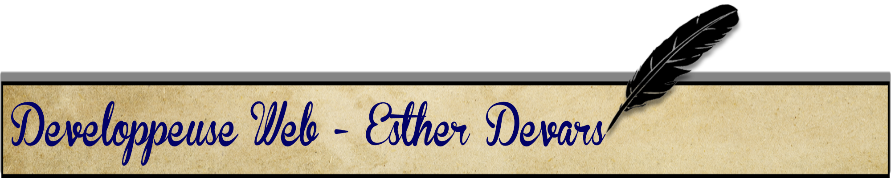
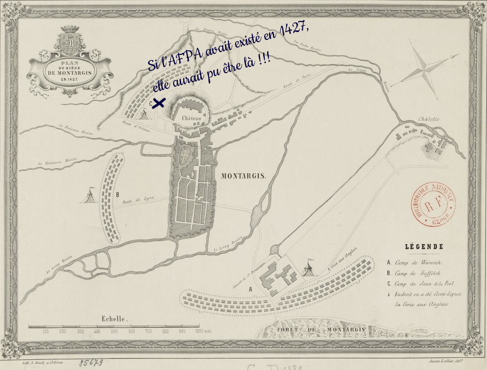
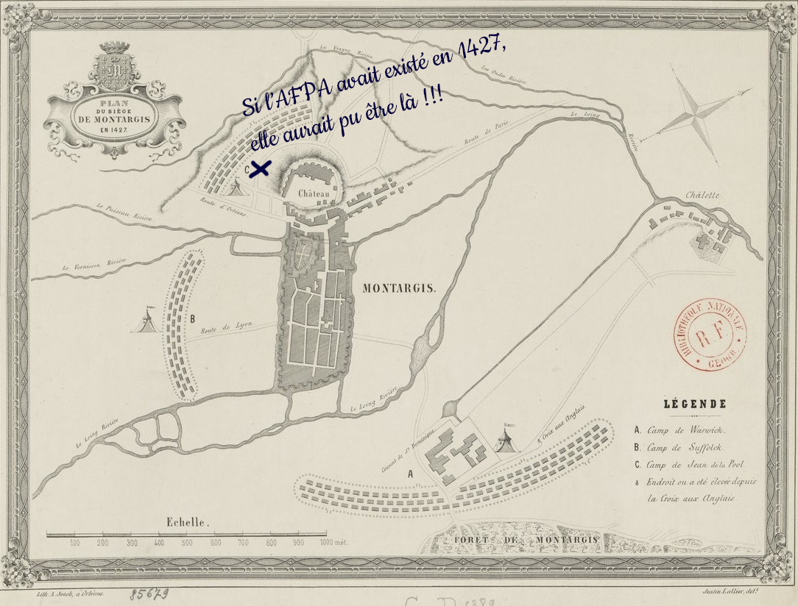

Durant cette période de stage,
j’ai eu l’opportunité de rejoindre l’Association pour la Formation Professionnelle des Adultes (AFPA),
située au 88 avenue de Lattre de Tassigny, 45200 Montargis.
L’AFPA est une institution spécialisée dans les domaines du bâtiment, de l’industrie et des services.
Elle regroupe plusieurs formations et joue un rôle essentiel dans la préparation des adultes à leur réussite professionnelle.
L’AFPA, dont le siège se trouve à Orléans, s’engage à former des professionnels compétents et qualifiés. Au cours de mon stage sur le développement web, j’ai pu découvrir les missions variées, Mon objectif était de contribuer activement à la réalisation de projets concrets tout en développant mes compétences dans le domaine spécifique de mon stage.

Dedans vous y trouverez tous mes travaux réalisés durant ces deux semaines et pour comparer j’y ai mis mes travaux de 2022 lors de ma découverte du métier.
Voici un résumé mon stage en développement web de deux semaines à l’AFPA de Montargis, avec Maxim Octavian comme tuteur, et la mission de créer un CV et un portfolio en ligne :
Dedans vous y trouverez tous mes travaux réalisés durant ces deux semaines et pour comparer j’y ai mis mes travaux de 2022 lors de ma découverte du métier.
Pendant mon stage à l’AFPA, j’ai travaillé avec une équipe variée de collègues. Voici leurs projets de chacun qui m’ont donné leur accord pour l’utilisation de leur image photos pour la réalisation de mon journal de stage.
➔Lukina Olga : Spécialisée en UI-Design.
➔Karina Enciso Gutierrez : Bien qu’elle ait une passion pour le développement web, elle a commencé en tant que professeur d’espagnol au collège Paul Eluard.
➔Jessica Daghan : Elle souhaite poursuivre en formation en développeuse web.
➔Sempare Naik : Son domaine est également le développement web.
➔Brissot Philippe : Il souhaite poursuivre en technicien en micro-informatique et bureautique.
➔José Guillerme : Il souhaite être technicien assistant informatique.
➔Benoît :il souhaite être développeur web.
➔Mathias : Également poursuivre en développement web.
➔Nioumasta : elle souhaite poursuivre pour être une développeur web voire UI-designer
C’est une équipe diversifiée avec des compétences variées, et chacun contribue au succès du projet à sa manière. Bravo à tous ! 🌟
 

J’ai effectué ton stage à l’AFPA de Montargis, avec une durée de deux semaines. Mon tuteur était Maxim Octavian. La mission principale était de réaliser un CV et un portfolio en ligne. Outils et langages utilisés : J’ai travaillé avec les langages suivants : HTML pour la structure de mes pages. CSS pour la mise en forme et le style. JavaScript pour l’interactivité. PHP pour la gestion côté serveur. J’ai utilisé Visual Studio Code comme environnement de développement.
CV : J’ai créé un CV en ligne pour me présenter, mettant en avant mes compétences, expériences et formations. Portfolio : J’ai crée portfolio présentent mes projets, réalisations, et peut-être même des articles ou tutoriels liés au développement web. Sources d’inspiration : Je me suis inspirée de Froggy (la grenouille) et du flexbox pour la mise en page. J’ai consultée des ressources telles que Grafikart et W3school pour apprendre et résoudre des problèmes. Code pen a également été une source d’inspiration pour moi.
Lors de mon premier jour à l’AFPA, j’ai rejoint un groupe de douze stagiaires passionnés par le développement web et le depannage informatique. L’atmosphère était empreinte d’excitation et de curiosité. L’intégration a été un moment clé. J’ai fait connaissance avec tes camarades, partageant des sourires et des anecdotes. Les discussions allaient bon train, chacun évoquant ses motivations et aspirations dans le domaine du web. L’observation a été primordiale. J’ai scruté l’environnement, observant le formateur et les autres stagiaires. Les gestes, les interactions, les méthodes de travail : tout était matière à apprendre. Enfin, l’écoute a été mon alliée. J’ai absorbé les conseils, les explications et les astuces prodiguées par le formateur. Chaque mot était précieux, chaque détail comptait. Ce premier jour a posé les bases d’une aventure passionnante dans le monde du développement web. J’étais prête à plonger tête la première dans ce nouvel univers, avec la certitude que chaque instant serait une opportunité d’apprendre et de grandir.
J’ai exploré plusieurs sites d’apprentissage et d’informations liés au développement-web Visual Studio Code - Un éditeur de code gratuit et polyvalent, optimisé pour le développement web et le débogage d’applications modernes. Flexbox Froggy - Un jeu interactif pour apprendre les bases du CSS Flexbox. Grafikart est une plateforme de tutoriels vidéo sur le développement web. En outre, W3school est une ressource essentielle pour les développeurs. Il fournit une documentation complète sur les technologies web telles que HTML, CSS et JavaScript depuis 2005. Enfin, Code Pen est un outil en ligne qui permet d’écrire, d’exécuter et de partager du code dans plus de 60 langages de programmations, y compris Java, python etc…
J’ai exploré la conception d’images sur Photoshop en appliquant des effets sur des textes. J’ai ensuite intégré ces images dans le codage de la partie
de mes projets. Voici un résumé de mes activités : Photoshop : Photoshop est un logiciel de référence pour la retouche et la création d’images. Il utilise des fichiers PSD (pour Photoshop Document) et prend en charge la quasi-totalité des formats graphiques existant. J’ai utilisé Photoshop pour concevoir mes images, appliquer des effets de texte, et les préparer pour l’intégration dans mon code. Google Fonts (googglefont): Google Fonts est une bibliothèque de polices web gratuites. Vous pouvez choisir parmi une variété de polices pour styliser vos textes dans vos projets web. Freefrontend: Freefrontend est une ressource en ligne qui propose des exemples de codes HTML, CSS et JavaScript pour divers éléments de conception web. Vous pouvez y trouver des idées et des inspirations pour vos projets. Images: Pour mes images, j’ai utilisé les sites suivants : Pexels propose plus de 900 photos gratuites, libres de droits et sans attribution. C’est une excellente source d’images pour vos projets. Pngegg offre des images au format PNG, idéales pour l’intégration dans vos pages web. En prenant des notes et en mettant en pratique mes connaissances, je suis sur la bonne voie pour améliorer mes compétences en conception et en développement web ! 🎨💻Ils doivent concevoir le Site pour expliquer à de nouveaux stagiaires la marche à suivre pour l’utilisation de Photoshop avec des tutos textuels en binôme pour réaliser des codages précis qu’ils ont en collaborations entre eux. Conception graphique du site : Olga et Nioumasta Tuto n°1 : Le travail du groupe, Jessica et Naîk Tuto n°2 : Insérer un png entre deux plans, Karina et Benoît Tuto n°3 : Utilisations des brosses, Oumar et Mathias.
voici un résumé de mon travail : Conception et Organisation du CV en Ligne: J’ai consacré du temps à concevoir, préparer et organiser mes ressources pour créer mon nouveau CV en ligne. Cela implique la sélection des informations pertinentes, la mise en forme et la planification de la structure de mon CV. Utilisation de Sites d’Apprentissage pour le Développement Web: J’ai exploré des sites d’apprentissage essentiels pour améliorer mes compétences en développement web. Ces plateformes m’ ont probablement fourni des tutoriels, des exemples de code et des conseils pour maîtriser les technologies du web. Réalisation d’un Site Web: J’ai créé un site web avec les éléments suivants : Header et Footer: Ces parties encadrent mon contenu et fournissent des informations de navigation. Background pour le Body: J’ai choisi un arrière-plan approprié pour la zone principale de votre site. Formulaire de Contact: J’ai intégré un formulaire permettant aux visiteurs de me contacter. Grille et Flexbox Responsifs: J’ai utilisé des techniques de mise en page pour rendre mon site adaptatif et agréable à consulter sur différents appareils. Je continue à explorer et à pratiquer pour renforcer mes compétences en développement web. 🌐💻
• Page d’accueil 1- Stagiaires 2- Graphique assisté par ordinateur 3- Dev web 4- TAI-SOFTWARE 5- TAI-HARDWARE 6- Sécurité • Leurs consignes : 1 site par chapitre Ressources : Photoshop+ zip+ police Réflexion dans le dossier pedasite Logo en png avec le prénom bannière. Carte Disney, 3 images : le fond, personnages en png et le titre « prénom » à travailler sur Photoshop. Octavian Maxim : Formateur à l’AFPA
Mon stage a été riche en apprentissages et en expériences. Création de mon Site Officiel: J’ai mis en place mon site officiel, accessible à l’adresse esther.d-webdesign.fr. Ce site constitue mon espace personnel en ligne où je présente mon parcours professionnel. Contenu du Site: Mon site contient deux sections importantes : Mon CV et Mon Portfolio: J’ai rassemblé mon CV et mon portfolio, mettant en avant mes compétences, mes réalisations et mon expérience. Le portfolio couvre deux périodes clés : “2022 - Mes débuts” et “2024 - Journal de stage”. Cela me permet de montrer mon évolution et mes accomplissements au fil du temps.
J’ai acquis de nouvelles connaissances et compétences dans le domaine des langages informatiques. Travailler au sein d’une équipe bienveillante et collaborative m’a permis de progresser davantage. J’ai pu m’épanouir dans cet univers passionnant du codage, en explorant constamment de nouvelles balises et raccourcis pour améliorer mes mises en forme. En somme, ce stage a été une expérience formatrice et motivante, et je suis enthousiaste à l’idée de continuer à développer mes compétences dans le domaine du web design et des nouvelles technologies du web ! 🌟💻